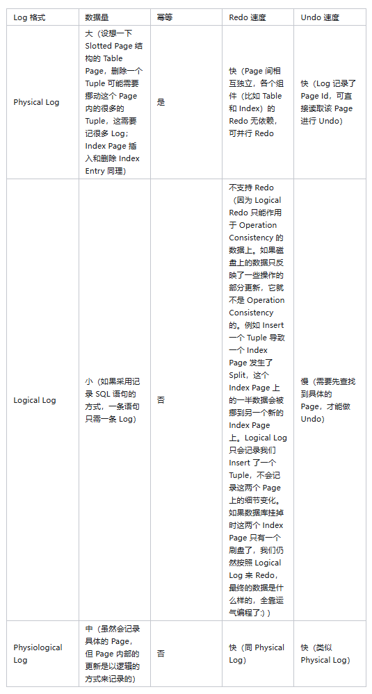

本文介绍回顾数据库系统中一种经典的故障恢复算法——ARIES Recovery算法。
背景知识
我们知道，数据库的事务具有ACID特性，也就是原子性、一致性、隔离性和持久性。那么，为了确保数据库系统在发生故障重启后能够将其恢复到挂掉之前的一致性的状态，满足维持事务的原子性和持久性的需要，Recovery算法也就应运而生了。
Buffer Pool策略
我们知道，在数据库系统中，所有Page驻留内存时都会由Buffer Pool来统一管理，它们会被放在Buffer Pool的一个个Frame中，由于磁盘IO巨慢无比，很多更新操作出于性能考虑只会更新内存中的副本。如果对某个Page的更新已经反映到内存中的副本上，还未反映到磁盘上的副本上，我们就说这个Page是Dirty Page，而为了保证数据不丢失，Dirty Page必须在某个时刻刷到磁盘上去，这就引出了Buffer Pool的不同刷盘策略：
- STEAL：允许将未提交事务的改动刷盘。
- NO-STEAL：与 STEAL 相反。
- FORCE：必须在事务提交时把该事务的所有改动刷盘。
- NO-FORCE：与 FORCE 相反。
我们可以在可以在STEAL和NO-STEAL中二选一，然后在FORCE和NO-FORCE中二选一，组成自己的策略。而选择不同的策略，对于Runtime性能和Recovery性能两个维度存在较大差异。
对于Runtime性能，采取STEAL/NO-FORCE的策略最快，NO-STEAL/FORCE的策略最慢。这是因为STEAL的策略能让我们快速把Dirty Page刷盘，腾出Buffer Pool空间给其他Page用；NO-FORCE的策略不要求事务提交时同步刷盘，而是由Buffer Pool来定期或者按需刷盘，这种做法大大减少了刷盘的次数。
相反，对于Recovery性能，结论是NO-STEAL/FORCE的策略最快，STEAL/NO-FORCE的策略最慢。这是因为 NO-STEAL的策略保证了磁盘上的任何Page都不含未提交事务的改动，不需要考虑未提交事务的*Undo。FORCE的策略保证了所有已提交事务的改动都已经反映到了磁盘上，不需要考虑已提交事务的Redo**。
WAL协议
WAL协议，即预写日志协议，要求我们在对任意Page进行写操作前都要记录日志，我们知道，记录日志我们并不是直接写盘，数据库系统中同时也会设有日志缓冲区，那么我们还需要保证所有Page刷盘之前与它有关的所有Log已经刷盘，所有事务提交之前该事物的所有Log也已经刷盘，这样才能确保故障恢复时完整日志的读取。
Log格式
Log格式按逻辑物理属性可以分为Logical Log，Physical Log和Physiological Log。Log按抽象程度还可以分为 High-Level Log以及Page-Oriented Log。Logical Log属于High-Level Log。Physical Log和Physiological Log 属于Page-Oriented Log。以下是不同Log格式的对比：

Checkpoint
Checkpoint代表数据库系统中的故障检查点/恢复点，是为了解决Recovery期间解析并处理全量Log时间长，以及Log累积过多占用大量磁盘空间问题而提出的。Checkpoint的实现方式有两种，Consistent Checkpoint和Fuzzy Checkpoint。Consistent Checkpoint会让数据库进行停服，不再接受新的事物，然后建立并记录静态检查点，之后再进行服务的恢复。Fuzzy Checkpoint则是实现在线Checkpoint，不需要停服操作。
ARIES算法
说了这么多，让我们来看看ARIES算法的核心内容：
WAL with STEAL/NO-FORCE： 以Runtime性能为主。
Repeating History During Redo： Recovery期间做Redo重放历史，重做所有已提交，未提交和已回滚的事务。
Logging Changes During Undo： 根据活跃事务表做Undo，撤销未提交或未回滚的事务。由于Undo操作并不是幂等的，因此需要记录事务补偿日志CLR。
ARIES算法的Recovery流程分为以下三个阶段：
Analysis阶段
- 从最近的一次Checkpoint Log的位置开始，顺序扫描所有Log，恢复出ATT（活跃事务表）和DPT（脏页表）。
ATT：对任意一个事务Ti ，如果
- 遇到Ti的Begin Log，就把Ti加入ATT，同时把状态设为Undo Candidate。
- 遇到Ti的Commit Log，就把ATT中的Ti状态设为Committed。
- 遇到Ti的End Log，就把Ti从ATT中移除。
- 遇到Ti的其他Log（即 Redo，Undo，CLR和Abort Log），更新Ti的Last LSN（每个事务最近一次更新操作的日志序列号）。
DPT：遇到任意Redo Log或CLR，如果对应的
Page- 不在DPT中：将它加入DPT，同时记录Rec LSN（每一个页自从上一次刷盘以来，第一次更新操作对应的日志序列号）。
- 已经在DPT中：无需处理。
- 从最近的一次Checkpoint Log的位置开始，顺序扫描所有Log，恢复出ATT（活跃事务表）和DPT（脏页表）。
Redo
找到DPT中最小的Rec LSN，将它作为起始点，顺序扫描Log并处理来重放历史（Redo所有事务的Redo Log以及CLR对应的更新操作）。
- 当且仅当
Log LSN > Page LSN，一个Log对应的更新操作才能在对应的Page上Redo。
- 当且仅当
为ATT中所有状态为Committed的事务写一条End Log，同时把它从ATT中移除。
Undo
- 找到ATT中最大的Last LSN，Undo它对应的事务，Undo完成后把该事务从ATT中移除。
- 重复上面步骤，直到ATT为空。
当上述三个阶段执行完毕，Recovery流程结束，数据库就可正常对外提供服务了。